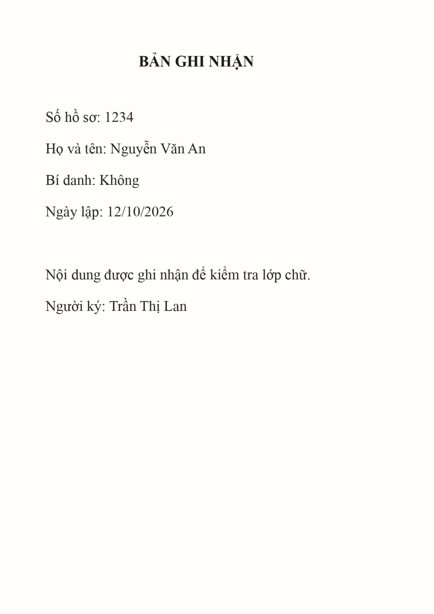
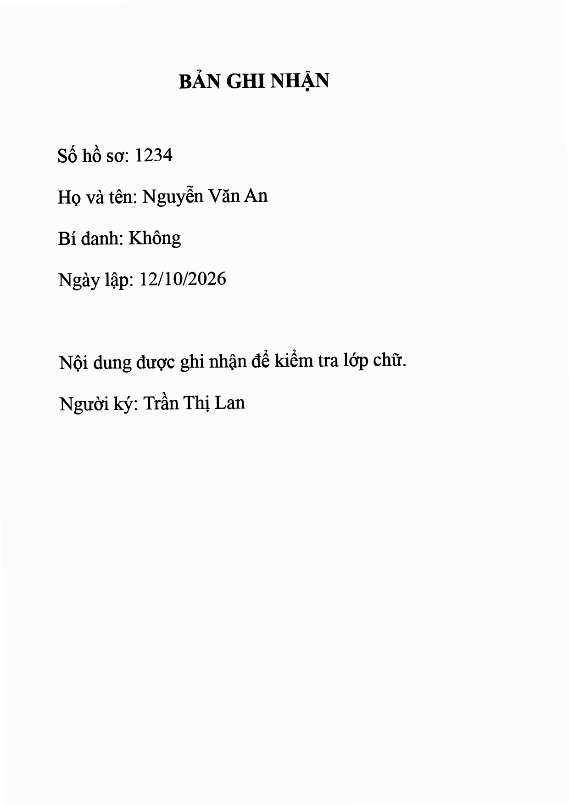
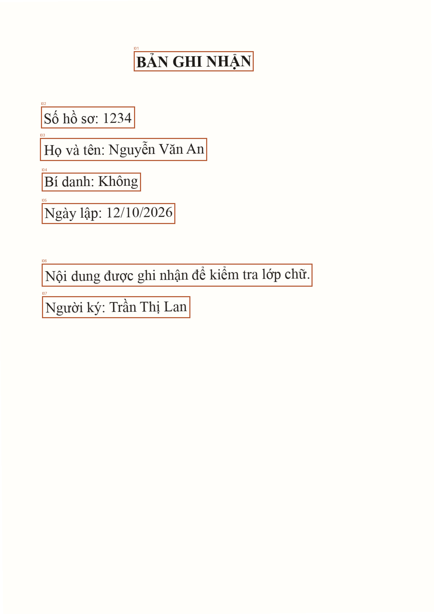
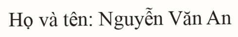

Trang ảnh không có lớp chữ
Ảnh PNG 1240 × 1754 px được tạo từ chữ tiếng Việt, có làm mờ nhẹ để mô phỏng bản quét. Đây là toàn bộ dữ liệu đầu vào của phép thử.


Phát hiện 7 vùng chữ
RapidOCR xác định vùng; Tesseract tạo hOCR có vị trí, VietOCR đọc lại từng crop. Mỗi vùng có ảnh crop riêng trong thư mục evidence.

Một vùng có khác biệt được gửi lên Codex CLI
Ở vùng l03, VietOCR viết “nguyễn” thường còn Tesseract viết “Nguyễn” hoa. Core gửi đúng ảnh crop này và hai bản đọc làm gợi ý. CLI đã đăng nhập trả JSON có ID hợp lệ; kết quả trùng Tesseract.

| Nguồn | Bản đọc | Kết luận |
|---|---|---|
| Tesseract | Họ và tên: Nguyễn Văn An | |
| VietOCR | Họ và tên: nguyễn Văn An | |
| Codex CLI | Họ và tên: Nguyễn Văn An | Đã nhận JSON |
| Core chọn | Họ và tên: Nguyễn Văn An | Tesseract được AI xác nhận |
AI chỉ được gọi cho vùng khác nhau, không tự sửa số khi số AI đọc xung đột với kết quả cục bộ. Lỗi CLI sẽ giữ quyết định cục bộ và được ghi vào báo cáo vùng.
PDF có lớp chữ và TXT đi cùng
OCRmyPDF đã xuất PDF một trang. PDF có OutputIntent và metadata PDF/A-2B; pdfminer trích được lớp chữ. Nội dung trích từ PDF khớp tệp TXT.
Nội dung TXT cuối
BẢN GHI NHẬN Số hồ sơ: 1234 Họ và tên: Nguyễn Văn An Bí danh: Không Ngày lập: 12/10/2026 Nội dung được ghi nhận để kiểm tra lớp chữ. Người ký: Trần Thị Lan
Kết quả và giới hạn
32 bài kiểm thử tự động qua. Lần chạy đầu cuối thật với Codex CLI: 1 vùng yêu cầu, 1 vùng phản hồi, không có lỗi AI. Lớp chữ PDF và TXT khớp nhau trên trang giả lập.
Phép thử này chưa chứng minh độ chính xác trên tài liệu khó, nhiều trang, chữ ký số hoặc provider CLI khác. Nút “Sử dụng AI” trên desktop vẫn chờ màn cài đặt kết nối với core.